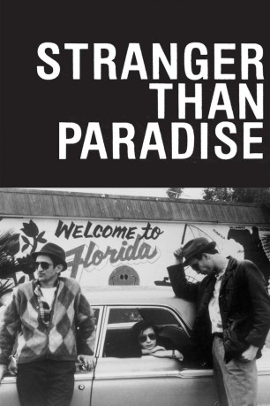

#5618 Stranger Than Paradise *OmU*
 
 IMDB-Wertung: 7.6 / 10
IMDB-Wertung: 7.6 / 10  Metascore: 0
Metascore: 0 
Der Ungar Bela Molnar, genannt Willie, lebt seit zehn Jahren in New York. Seine 16jährige Cousine Eva, die gerade aus Ungarn gekommen ist, wohnt für zehn Tage bei ihm, um dann nach Cleveland weiterzufahren, wo sie bei ihrer Tante Lottie einziehen will. Nach anfänglicher Ablehnung ändern sich Willies Vorurteile Eva gegenüber langsam - er entdeckt in ihr eine Gleichgesinnte. Als er sie ein Jahr später zusammen mit seinem Freund Eddie in Cleveland besucht, beschließt er, sie zu sich zurück zu holen.
Englisch mit dt. Untertiteln
Jahr: 1984
Dauer: 89 Minuten
FSK: 12
Land: USA Studio: Samuel Goldwyn Company, TheTonspuren:
Untertitel:
Auflösung: SD (720x404) Größe: 1290 MB
Genre: Drama, Komödie
Regisseur:  Jim Jarmusch
Jim Jarmusch
Drehbuch: Jack Burns
Soundtrack:
Darsteller:
- John Lurie als Willie
- Eszter Balint als Eva
 Richard Edson als Eddie
Richard Edson als Eddie- Tom DiCillo als Airline Agent
- Sara Driver als Girl with Hat
- Cecillia Stark als Aunt Lotte
- Danny Rosen als Billy
- Rammellzee als Man With Money
- Richard Boes als Factory Worker
- Rockets Redglare als Poker player
- Harvey Perr als Poker player
- Brian J. Burchill als Poker player
Datei: X:\1984\Stranger Than Paradise OmU (1984, FSK12, 720x404).mkv seit 23.02.2017
Festplatte: HD 1980-1986
 Es gibt insgesamt 46 Filme in der Gruppe '1984'
Es gibt insgesamt 46 Filme in der Gruppe '1984'